Вимірювальні прилади
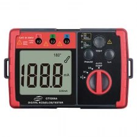
Вимірювачі електроенергії і мереж
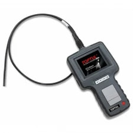Оптичний і звуковий контроль
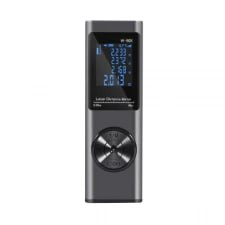Вимірювачі довжини, кута, відстані
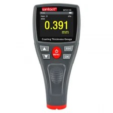Вимірювачі товщини
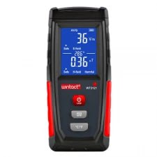Вимірювачі випромінювання
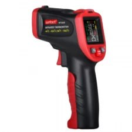Вимірювачі температури
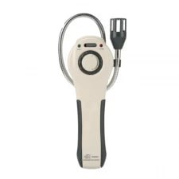Вимірювачі газів
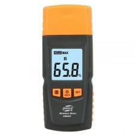Вимірювачі вологи та рідин
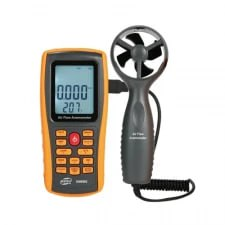Вимірювачі швидкості
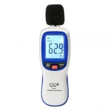Вимірювачі вібрації та шуму
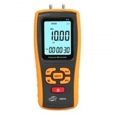Вимірювачі перепаду тиску